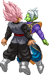

activate Godly Mode (LV2)
Activating the Goldy Mode changes a few things in Black's gameplay.
-Divine Cross costs LV2 instead of LV3 and cancels the Godly Mode upon activation.
-Depending if you're on LV1, 2 or 3 of the Godly Bar, Black will perform a Finisher at the end of the Divine Cross:
LV1 - Divine Phoenix Punishment.
LV2 - Monsterous Blaster.
LV3 - Monsterous Annihilation.
-Divine Cross costs LV2 instead of LV3 and cancels the Godly Mode upon activation.
-Depending if you're on LV1, 2 or 3 of the Godly Bar, Black will perform a Finisher at the end of the Divine Cross:
LV1 - Divine Phoenix Punishment.
LV2 - Monsterous Blaster.
LV3 - Monsterous Annihilation.